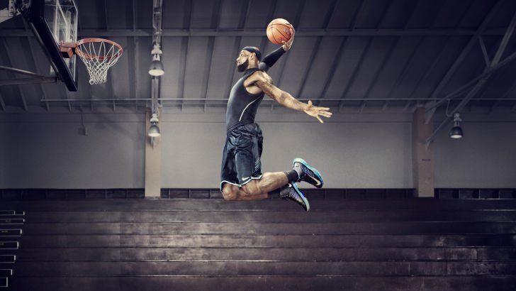

MY TOP 5 PLAYERS IN THE LEAGUE
* NOTE THIS LIST IS SUBJECTIVE AND PERSONAL
-
Lebron James
Lebron James is a veteran player who lead his team towards 2020 championship this year. He earned his 4th finals MVP this year and proved that he is still one of the best, if not the best player in the league dispite him turning 36 coming December 30th. Lebron stands 6ft 9 inches, 250lb, and plays small forward for the Lakers at the moment.
-
Career Stats
During his 17 - year long career, he was capable of averaging 27.1 points per game, 7.4 rebounds, and 7.4 assists.

-
Awards
- 63 NBA Player of the Week
- 1 Olympic Bronze Medal
- 39 NBA Player of the Month
- 4 NBA Most Valuable Player
- 6 NBA Rookie of the Month
- 16 All-NBA
- 6 All-Defensive Team
- 2 Olympic Gold Medal
- 3 NBA All-Star Most Valuable Player
- 1 NBA Rookie of the Year
- 1NBA Sporting News Rookie of the Year
- 4 NBA Finals Most Valuable Player
- 1 All-Rookie Team
- 1 NBA Sporting News Most Valuable Player of the Year
-
Career Stats
-
Kevin Durant
Kevin Durant is considered as one of the two most talented player offensively along with James Harden. KD is a 6-10 (Probably 7ft), 240lb, small forward with a wingspan of 7ft 4 that is an elite shooter. KD will be playing for Brooklyn Nets next season after his rehab for achilies is finished. Kevin Durant has been playing for the Golden State Warriors - most favored team to win a championship for the past 3 seasons on the most stacked team in the history of NBA along side Steph Curry, Klay Thompson, and Draymond Green. It is surely interesting how KD will play next season with Kyrie Irving after his comeback from devastating injury.
-
Career Stats
Kevin Durant averaged 27 points, 7.1 rebounds, and 4.1 assists
-
Awards
- 13 NBA Player of the Month
- 24 NBA Player of the Week
- 1 NBA Most Valuable Player
- 5 NBA Rookie of the Month
- 9 All-NBA
- 2 Olympic Gold Medal
- 2 NBA All-Star Most Valuable Player
- 1 NBA Rookie of the Year
- 2 NBA Finals Most Valuable Player
- 1 All-Rookie Team
-
Career Stats
-
Kawhi Leonard
I'm sure if you are a basketball fan, and if you reside in Canada, you know who Kawhi Leonard is. He is the best perimeter defender for his position and led Toronto Raptors to the finals last year and won his second Finals MVP. Although Kawhi Leonard may never be as good as Lebron or Dwade, his prime is right now and he is undoubtably one of the players who represent nowadays league.
-
Career Stats
During his career, he averaged 18.7 points, 6.4 rebounds and 2.7 assists while in 2019 - 20 season he averaged 27.1 points, 7.1 rebounds, and 4.9 assists.
-
Awards
- 2 All-NBA
- 3 All-Defensive Team
- 2 Defensive Player of the Year
- 1 NBA All-Star Most Valuable Player
- 1 NBA Rookie of the Year
- 2 NBA Finals Most Valuable Player
- 1 All-Rookie Team
-
Career Stats
-
Career Stats
During his career, he averaged 25.2 points, 5.3 rebounds, 6.4 assists while he averaged 34.3 points, 6.6 rebounds, and 7.5 assists this season with Houston Rockets.
-
Awards
- 4 All-NBA
- 1 NBA Assists leader
- 1 NBA Rookie of the Year
- 1 6th Man of the Year
- 1 All-Rookie Team
-
Career Stats
During his career, he averaged 20.1 points, 8.9 rebounds, 4.3 assists while 2019-20, he averaged 29.5, 13.6 rebounds and 5.6 assists.
-
Awards
- 4 All-NBA
- 3 All-Defensive Team
- 1 Defensive Player of the Year
- 2 NBA All-Star Most Valuable Player
- 2 NBA Finals Most Valuable Player
- 1 All-Rookie Team
James Harden
One of the two most talented played offensively in the league. James Harden proved that he can solo-carry his team to the playoffs and possibly a title contender team with help of other players. Although his skill set and capability of scoring buckets is underappreciated due to his flopping, he is still one of the best players representing the league.
Giannis AntetoKounmpo
Giannis, better known as the "Greek Freak", stands 6-11, 242lb with a wing span of 7'4 ft. Back-to-Back reigning MVP has a size of an elite big-man, yet plays like an elite slasher. The day Greek Freak can shoot jumpers will be the day he will take over the league.
My Favorite Teams and Some Information on Them
- LA Lakers
- Milwaukee Bucks
- Toronto Raptors
- Miami Heats

LA Lakers won the championship this year, and still has 2 of their core players, Anthony Davis and Lebron James who are considered the best duo / best players in the league. They will easily be a title contender next year as well. Lakers this year played with height advantage over other teams + using Lebron's court vision + Anthony Davis offensively to take the lead in games.
They have superstar Giannis and he is continously improving his skill sets and remains dominant in the league at age of 25. Milwaukee Bucks is known for finishing up the season with the best win/loserecord within the league for the regular season, and losing in the playoffs due to lack of 2nd and 3rd option in the team.
Toronto Raptors, dispite their old Ace player Kawhi Leonard leaving for LA clippers last off-season, is still a playoff team which made it to Semi East Conference Finals this year. Their best trait as a team is their paint-zone defense and has a lot of room to improve with young players like Pascal Siakam and OG Anunoby. Raptors is the only Team in the league representing Canadian cities.
Miami Heats was a rebuilding-team. Underdog team nobody expected to be in the finals this year. They are in a good balance of young-talented rookies and redeemed veteran players such as Jimmy Butler and Andrew Iguodala. They have enough salary cap for to recruit another superstar in coming off-seasons and has a lot of chance to improve as a team.